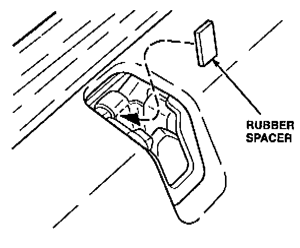
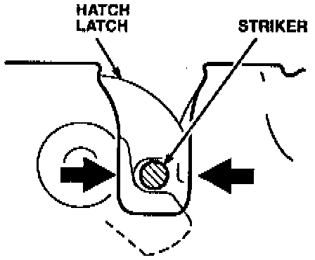
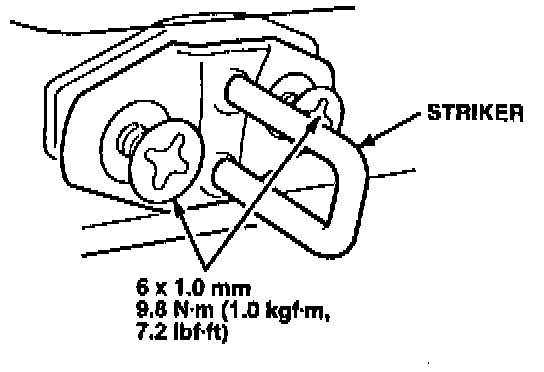
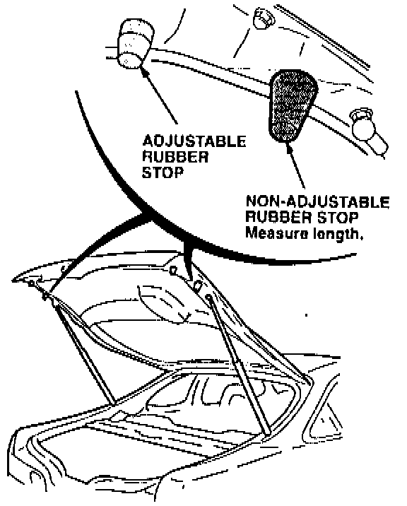
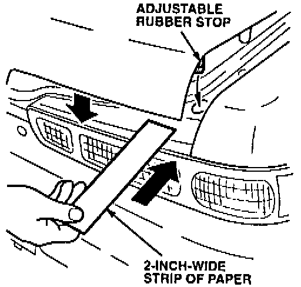
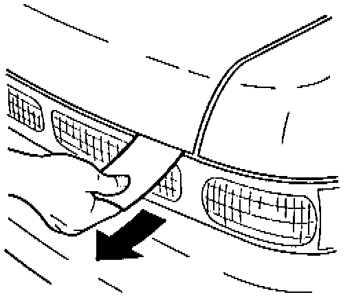

Hatch - Rattles
YEAR1994
MODEL
INTEGRA
VIN APPLICATION
ALL 3-DOOR
BULLETIN NO.
93-014
August 16, 1994
Hatch Rattles
(Supersedes 93-014, dated August 24, 1993)
SYMPTOM
The hatch latch rattles while driving the car over rough roads.
PROBABLE CAUSE
^ The striker is not adjusted properly. [NEW]
^ Inflexibility in the rubber stops. [NEW]
CORRECTIVE ACTION [NEW]
Reposition the striker in the latch, and replace the rubber stops with the items listed under PARTS INFORMATION.
1. Loosen the striker mounting screws slightly, just enough so that it will move when tapped. Move the striker forward as far as it will go.

2. Insert a rubber spacer (see PARTS INFORMATION) into the latch assembly so it rests against the back of the housing.
3. Gently close the hatch until it latches.
4. From inside the car tap the striker backward until it contacts the rubber spacer.

5. Center the striker in the latch.

6. Open the hatch and tighten the striker screws. Remove the rubber spacer and save it.
7. Perform this step only if the car is above the following VINS:
GS-R: above VIN JH4DC2...RS000455
LS, RS: above VIN JH4DC4...RS001262

Measure the length of the non-adjustable rubber stops on the hatch. If they are 28 mm long, replace them with the 24 mm rubber stops listed under PARTS INFORMATION.
8. Replace the adjustable rubber stops with the new stops listed under PARTS INFORMATION. Screw the stops in as far as they will go.

9. Place a strip of paper over the contact area for the adjustable stop, then close the hatch fully.

10. Pull on the paper strip. If you can pull it out, open the hatch and adjust the rubber stop out one-quarter turn. Repeat this until you cannot pull the paper strip out without opening the hatch.
11. Repeat steps 9 and 10 on the other side.
PARTS INFORMATION [NEW]
Rubber spacer: P/N 83416-SR3-308
Adjustable rubber stop
(2 required): P/N 74828-ST7-000
24 mm Non-adjustable
rubber stop (2 required): P/N 74827-SK7-000
WARRANTY CLAIM INFORMATION
In warranty:
The normal warranty applies.
Out of warranty:
Any repair performed after warranty expiration may be eligible for goodwill consideration by the District Technical Manager or your Zone Office. You must request consideration, and get a decision, before starting work.
Operation number: 823171 [NEW]
Flat rate time: 0.4 hour [NEW]
Failed P/N: P/N 74828-SK7-000 [NEW]
Defect code: 043 [NEW]
Contention code: B07 [NEW]